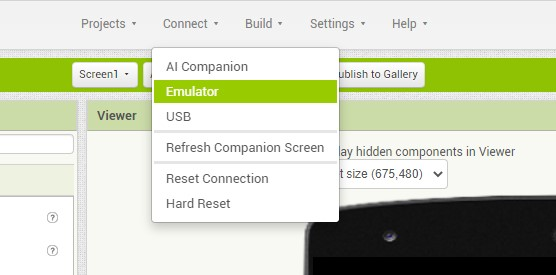

The project that I’ve chosen is called “Mini Fling It In!” which I made from A1 until now. This will be made from a site called MIT app inventor. The key features of this game consist of flicking the ball to a particular area, but there are obstacles that include 2D rectangle lines and they’re immobile throughout the duration of the game in order to get the ball through to succeed and win the game. Lastly, it’s recommended for Android smartphone users since it’s more accessible to connect your Android device from your project or game through MIT app inventor, and can also be played from your computer via the emulator, located at the top of the design editor section.
This would be a handy and an interesting game for individuals due to the fun aspect of it even if it were just a simple game; it takes away your stress, especially if you had a long day from work, studies and many more. Also, this app is a perfect way to relax. Lastly, another interesting part of this is the low level of complexity and difficulty of this app/game, which indicates that it can be played by anyone of any ages. Statistics show that 6.8 million people around 190 countries have used this app inventor to create more than 24 million apps, which indicates as a good sign for both developers and consumers (MIT App Inventor n.d.).
This game will fit in with the IT trends in our modern era today (specifically in the Internet of Things [IoT]) because gaming in general incorporates the ways in which individuals connect to the devices of their friends, and others. This indicates that the togetherness will boost up when playing this game due to its low level of complexity and a high level of fun (even if there’s no multiplayer option yet).
The competitors that we are facing are small market teams/organisations that can be found in the App Store and the Google Play Store. Lastly, the points of difference between our project draft and its current situation is that there are noticeable changes and progress towards the overall completion via the MIT App Inventor. This is evident through the progress of the project from Assignment 1, 2, and 3.
In Assignment 1, the project being put together well, despite our team's slight inexperience in terms of IT projects in general, as it is our first project ever made. It also covered all of the required areas. However, it needed a better depth in terms of the description of current comparable games and in-depth discussion of the technologies behind its development and running. The project in that assignment was certainly comprehensive, but it needs to have had a greater expansion in the tools and skills component that mainly focuses on the backend technologies behind the MIT app inventor, identifying how they could integrate as the scope of the game creation and deployment in a brief manner.
In Assignment 2, its descriptions are clear and the tools and technologies have been expanded. It also has an excellent detail on the game build , the skills, tools and technologies, compared to the previous assignment. We had a good list of market and niche needs that we can further expand on in the future, unlike in the previous assignment. However, it lacks the financial breakdown and analysis of hosting. It only required one thing and we are closer to the overall completion of the project.
Despite being so close to completion, there were risks that we found in this assignment, compared to A2 that we need to take into consideration. Some of those risks include minor crashes/bug errors which will cause lags or freezing on your device. Also, one of the most noticeable risks include an emulator error, which is one of the most dangerous risks in our project as the emulator is an indicator whether your app will run successfully for marketing in the App Store or Google Play Store via MIT App Inventor. Also, there will be times that the app/game will only work mostly on Android devices only, and my team is working on also running it in Apple devices. We are all aware that the MIT App Inventor is mostly capable in Android devices. The last risk that my team noticed is that the lack of 3D graphics, which means that we had to stick to 2D features and models of the game (e.g. obstacles such as rectangle fences) as our team is not yet capable of implementing 3D features (as of now) based on our overall skills in game developing. For example, the 2D fences and obstacles in the “Mini Flick It In” will be as is, regardless of app/software updates.